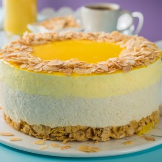

Recetas de Postres: deliciosas tartas, helados y pasteles - 2.256 recetas fáciles - Directo al Paladar
 Webedia Directo al Paladar Menú Nuevo Buscar Pinterest Facebook Flipboard Instagram Youtube POSTRES MENÚ SEMANAL SELECCIÓN
Partners
Triunfa Con Buitoni Cocina con Maggi Destaca con PascualRecetas de Postres
HOY SE HABLA DE Menú Dieta Refresco España AlimentosCómo hacer banana split, receta del postre americano más popular del planeta (con vídeo incluido)
Vídeos de Recetas Carmen Tía Alia 20 junio 2021, 12:01Suspiros de Pajares, receta tradicional asturiana para nostálgicos de las galletas de mantequilla de toda la vida
Recetas de Postres Liliana Fuchs 19 junio 2021, 12:01Clafoutis tutti frutti, la sencilla versión de las Recetas de Julie del postre tradicional francés (con o sin gluten)
Recetas de Postres Liliana Fuchs 13 junio 2021, 18:00Cherry pie: receta de la clásica tarta americana de cerezas
Recetas de Postres Carmen Tía Alia 05 junio 2021, 18:00LO MÁS POPULAR
1 Kakigori, cómo es el helado tradicional de Japón que se está poniendo de moda en España 2 Cómo hacer yogur casero: consejos para quede perfecto y 27 recetas en las que usarlo 3 Ajo caliente, campero o de viña: la humilde receta tradicional andaluza que nos tiene cautivados 4 Las básculas de cocina mejor valoradas de Amazon desde 7,99 euros 5 Gastroguía de Sevilla: qué comer en la capital de Andalucía (y qué restaurantes no debes perderte en la ciudad hispalense)Lo más popular en Directo al Paladar
Cookies tiernas de doble chocolate: la receta de galletas de Martha Stewart para los más chocolateros
Recetas de Postres Liliana Fuchs 29 mayo 2021, 18:01Galletas de canela, pasas y nueces, la receta más fácil para la que solo necesitas un bol y un tenedor (con vídeo incluido)
Vídeos de Recetas Carmen Tía Alia 23 mayo 2021, 12:00Receta de clafoutis de cerezas: un clásico de la repostería francesa que siempre triunfa
Recetas de Postres Unodedos 19 mayo 2021, 08:11Receta de mhalbi, el postre tradicional argelino que nos recuerda al arroz con leche (pero que es mucho más fácil)
Recetas de Postres Liliana Fuchs 15 mayo 2021, 18:00Directo al Paladar TV
Síguenos enCómo hacer la mejor receta de empanadas de jamón y queso al horno
Receta de empanadas criollas caseras, fáciles y rápidas
SANGRÍA como DIOS MANDA
Cómo sacar TODO EL PARTIDO a una FREIDORA SIN ACEITE
Cómo hacer ENSALADA DE PASTA con CHORIZO
BROWNIE DE CHOCOLATE de Katherine Hepburn
Cómo hacer BUYURDI
NACHOS CON QUESO, la receta original
Cómo hacer MASA QUEBRADA básica
Síguenos Twitter Facebook Youtube Instagram Pinterest FlipboardReceta de rosquillas "tontas" de San Isidro, un clásico de la repostería madrileña (que no puede faltar en tu recetario)
Recetas de Postres Carmen Tía Alia 14 mayo 2021, 12:00Receta de bizcocho de sirope de arce y espelta integral, de miga tierna y corteza con un punto crujiente
Recetas de Postres Liliana Fuchs 11 mayo 2021, 18:01Mousse de limón: la receta clásica del postre más refrescante
Recetas de Postres Carmen Tía Alia 09 mayo 2021, 08:27Receta de pastel lava, el coulant de chocolate original con corazón de trufa (sin gluten)
Recetas de Postres Liliana Fuchs 08 mayo 2021, 18:00Cómo hacer cuajada casera tradicional, tan fácil y deliciosa que no volverás a comprarla en el supermercado
Curso de Cocina Carmen Tía Alia 05 mayo 2021, 18:0113 recetas de postres para celebrar un Día de la Madre muy dulce
Recetas de Postres Liliana Fuchs 28 abril 2021, 10:02Receta de tarta San Marcos, así se hace este clásico de la repostería española (con vídeo incluido)
Vídeos de Recetas Carmen Tía Alia 25 abril 2021, 12:01Tarta Sacher: la receta original del mítico pastel de chocolate vienés
Recetas de Postres Esther Clemente 24 abril 2021, 09:17Receta de tarta de chocolate y galletas: la típica de los cumpleaños (perfecta para hacer con niños)
Recetas de Postres Carmen Tía Alia 20 abril 2021, 17:0733 recetas de magdalenas caseras, desde las más clásicas y tradicionales a las más modernas
Recetas de Postres Liliana Fuchs 17 abril 2021, 18:01Pastel de chocolate, plátano y pera sin azúcar añadido: receta de postre sin gluten y sin lactosa
Recetas de Postres Liliana Fuchs 16 abril 2021, 18:00Galletas de avena caseras, la receta tradicional de un dulce clásico para la merienda
Recetas de Postres Liliana Fuchs 13 abril 2021, 18:01 Más antiguasArchivo de noticias
Noticias de Recetas de Postres en Directo al Paladar
Las mejores recetas de postres las podrás encontrar en esta serie de artículos, cubriendo todos los tipos y presentaciones, desde dulces, tartas y pasteles, helados, crepes y mucho más. Aprende los trucos que harán tus recetas repostería más originales y sabrosas, sorprende a familia y amigos con las recetas caseras de dulces de Directo al paladar para preparar fácil y rápido o también con Thermomix.
OTROS TEMAS: Recetas con Thermomix Recetas de Aperitivos Postres fáciles y rápidos Recetas de invierno Horno InicioPartners
Triunfa Con Buitoni Cocina con Maggi Destaca con Pascual Recetas con Thermomix Recetas de Aperitivos Recetas de Ensaladas Recetas de Postres Recetas Vegetarianas Utensilios Postres fáciles y rápidos Recetas de invierno Horno Huevos Azúcar HarinaVer más temas
Síguenos Twitter Facebook Youtube Instagram Pinterest Flipboard Directo al Paladar TV Lo mejor Equipo editorial Contacta con nosotrosMás sitios que te gustarán
Espinof Xataka Poprosa VitónicaExplora en nuestros medios
Tecnología Móviles, tablets, aplicaciones, videojuegos, fotografía, domótica Xataka Xataka Móvil Xataka Foto Xataka Android Xataka Smart Home Xataka Windows Xataka Ciencia Applesfera Genbeta Magnet Mundo Xiaomi Videojuegos Consolas, juegos, PC, PS4, Switch, Nintendo 3DS y Xbox 3DJuegos Vida Extra IGN Millenium Entretenimiento Series, cine, estrenos en cartelera, premios, rodajes, nuevas películas, televisión Sensacine Espinof Gastronomía Recetas, recetas de cocina fácil, pinchos, tapas, postres Directo al Paladar Estilo de vida Moda, belleza, estilo, salud, fitness, familia, gastronomía, decoración, famosos Vitónica Trendencias Trendencias Hombre Decoesfera Compradiccion Poprosa Latinoamérica Publicaciones de México Xataka México Directo al Paladar México Sensacine México 3DJuegos México Aviso legal Condiciones de uso Condiciones de uso de cookies Publicidad InicioReciente
Los mejores perritos calientes se cocinan en cerveza Cinco recetas de brochetas frías de aperitivo para el picoteo del finde La quesería de Jaén, montada de la nada, que se ha coronado en los 'Oscar del Queso' Costilla de cerdo agridulce con melocotones: receta de aires asiáticos para viajar en la mesa Nuestros favoritos Las nueve mejores recetas de empanadillas de Directo al Paladar Nuestros favoritos Las básculas de cocina mejor valoradas de Amazon desde 7,99 euros La mercancía más codiciada en el mercado negro ya no es el paladio ni el oro. Son los pistachos en Magnet Calamares a la malagueña, receta del guiso marinero más sabroso que hemos probado en los últimos tiempos El rooibos se convierte en el primer alimento africano con denominación de origen: qué es y por qué importa de dónde venga 29 recetas para alimentarnos de forma saludable y equilibrada en el menú semanal del 28 de junio Dónde comerse los mejores espetos de sardinas de Málaga (y de la Costa del Sol) Receta de vichyssoise con compota de manzana y crujiente de jamón Nuestros favoritos Espaguetis con pesto de almendras, tomate y rúcula: receta vegana que disfrutarán todos en casa Los pequeños electrodomésticos con los que preparar un auténtico “desayuno de campeones” Wetaca sufre un fallo de calidad y pide a los clientes que tiren sus táperes, pero no revela qué ha encontrado en los análisis Cómo hacer el entrecot a la pimienta perfecto, receta sencilla Las siete mejores formas de abrir una botella de vino cuando no tienes sacacorchos El gazpacho ¿en vaso o en plato? El debate que enfrenta, incluso, a los andaluces Receta de paté de pollo y naranja, para lucirte en el aperitivo o hacer un buen regalo Nuestros favoritos Cómo hacer yogur casero: consejos para quede perfecto y 27 recetas en las que usarloVer más artículos
Directo al Paladar TV
Cómo hacer la mejor receta de empanadas de jamón y queso al horno Receta de empanadas criollas caseras, fáciles y rápidas SANGRÍA como DIOS MANDAVer más vídeos
Síguenos Twitter Facebook Youtube Instagram Pinterest FlipboardEn Directo al Paladar hablamos de
Recetas con Thermomix Recetas de Aperitivos Recetas de Ensaladas Recetas de Postres Recetas Vegetarianas Utensilios Postres fáciles y rápidos Recetas de invierno Horno Huevos Azúcar HarinaVer más temas
SubirWebedia
Tecnología
Xataka Xataka Móvil Xataka Foto Xataka Android Xataka Smart Home Xataka Windows Xataka Ciencia Applesfera Genbeta Magnet Mundo XiaomiVideojuegos
3DJuegos Vida Extra IGN MilleniumEntretenimiento
Sensacine EspinofGastronomía
Directo al PaladarEstilo de vida
Vitónica Trendencias Trendencias Hombre Decoesfera Compradiccion PoprosaLatinoamérica
Xataka México 3DJuegos México Sensacine México Directo al Paladar México Webedia Xataka Vida Extra Espinof Genbeta Directo al Paladar Xataka Ciencia Trendencias Applesfera Xataka Móvil Decoesfera Vitónica Xataka Foto Trendencias Hombre Xataka Android Xataka Smart Home Xataka Windows Magnet Compradiccion 3DJuegos Sensacine IGN Millenium Poprosa Mundo Xiaomi